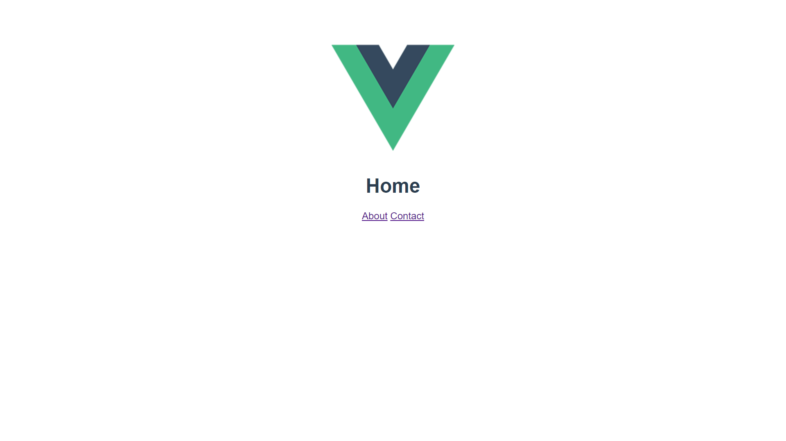

VueのRouterを使った簡単なページがたくさんあるサイトを作りましょう
手順
- Vueアプリを生成する
- Homeページのコンポーネントを作る
- Aboutページのコンポーネントを作る
- Contactページのコンポーネントを作る
- "/" と "/about" と "/contact" をURIとしてRouterに追加する
- router-linkを使って、それぞれのページで他のページに行けるようにリンクを追加する (参考 https://router.vuejs.org/ja/api/#router-link)
